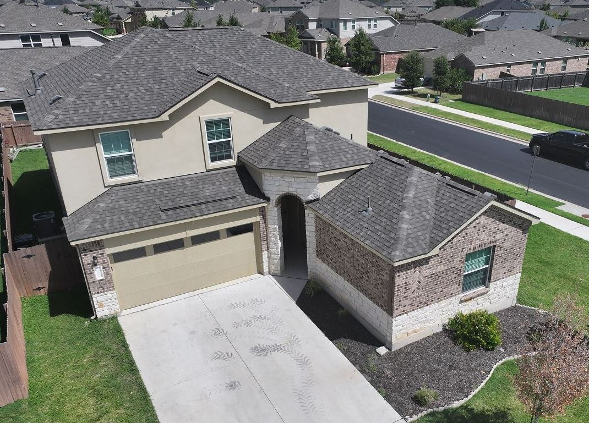

Quick answer: The best hail resistant roof for most Texas homes is one with a UL 2218 Class 4 impact rating. Class 4 asphalt shingles are the practical choice if you plan to stay under 10 years. If you are staying 20+ years, Class 4 metal or stone coated steel usually costs less over its lifetime, lasting 40–70 years. Either way, a verified Class 4 roof can earn a 10–35% credit on the wind-and-hail portion of your Texas homeowners premium.
Key Takeaways for Central Texas Homeowners
- Central Texas sees roughly 25–35 hail events per year. It is not a low-risk area.
- Class 4 is the highest UL 2218 rating: a 2-inch steel ball dropped from 20 feet, twice, with no cracking.
- Class 4 shingles cost about $11,000–$16,000 on a typical 2,000 sq ft Texas home. Metal runs 2–3x that.
- Insurance credits require documentation, often TDI Form PC068. Get the discount in writing before you install.
- The rating covers the material, not the installation. Contractor quality matters just as much.
Why Choosing a Hail Resistant Roof in Texas Matters More Than You Think
Choosing a hail resistant roof is one of the most important decisions a Central Texas homeowner can make, and most people go into it without enough information. Texas leads the nation in hail damage claims, and Central Texas sits squarely in one of the most active hail corridors in the country.
Many homeowners replace their roofs without understanding which materials hold up under impact, what UL 2218 Class 4 means in practical terms, or whether the upgrade pays off financially. This guide answers those questions in plain language, so you can make a confident decision before the next storm season forces your hand.
Verstera Roofing serves Austin, San Antonio, Harker Heights, Temple, Leander, Georgetown, and the surrounding Central Texas region. We walk homeowners through this exact decision every season, and the questions are always the same: What material is worth the money? Will insurance help? How do I know I'm getting what I'm paying for?
Why Does Texas Put Your Roof Through More Than Most States?
Texas is consistently among the states with the most hail events and the largest hail-related insurance payouts. North Texas and the Panhandle see the highest event frequency, but Central Texas is not the low-risk area many homeowners assume it is.
The Hail Corridor That Cuts Through Central Texas
Central Texas — including Austin, San Antonio, and the Hill Country — records hail events roughly 25 to 35 times per year. The size data removes any remaining complacency: in 2024, a hailstone measuring 6.25 inches fell near Johnson City in Blanco County, a county most people think of as Hill Country vacation territory. If you own a roof in Georgetown, Leander, or Harker Heights, you are in the same threat environment.
Bexar County ranks among the highest in the San Antonio area for documented hail events, while Bell and Williamson counties consistently place in the upper tier statewide for wind and hail insurance claims. These are the counties where our crews inspect roofs every storm season.
How Does Hailstone Size Translate to Roof Damage?
Hailstone diameter is directly tied to the damage a standard shingle roof absorbs:
- Quarter-sized (~1 inch): granule loss on standard shingles
- Golf ball-sized (~1.75 inches): bruised shingle mat and cracked surface coatings
- Baseball-sized (~2.75 inches): fractured shingles, exposing decking to water infiltration
These thresholds reflect common patterns observed in the field. Exact outcomes vary with impact angle, wind speed, and shingle condition, which is why material selection matters as much as storm frequency.
What Does "Class 4" Actually Mean for a Hail Resistant Roof?
Class 4 gets used as a marketing phrase so often that it is easy to assume it is more label than standard. It isn't. UL 2218 is a specific laboratory test protocol developed by Underwriters Laboratories, and Class 4 is the highest rating on its four-tier scale.
How the UL 2218 Impact Test Works
A two-inch steel ball is dropped from 20 feet, striking the same vulnerable spot twice. Technicians then inspect the underside for cracks, splits, or fractures. A product earns Class 4 only if it passes without structural failure. That ball simulates roughly two-inch hail, which covers the most common severe-hail sizes across Central Texas. Classes 1 through 3 use smaller balls dropped from lower heights — Class 4 is the ceiling, not a mid-tier compromise.
What Class 4 Certification Doesn't Guarantee
Real hail varies in shape, density, wind speed, and angle of impact in ways a lab cannot fully replicate. Hail larger than two inches, irregular stones, or repeated storm seasons can still cause dents, granule loss, or reduced service life on a Class 4 roof. The rating means the material passed a controlled test — not that the roof is indestructible. Installation quality, decking condition, underlayment, and flashing detail all directly affect how a roof performs when real hail arrives.

Hail impacts leave random, concave marks with fresh dark asphalt exposed
Which Hail Resistant Roofing Material Is Best for Texas?
Three materials make practical sense for Central Texas homeowners: Class 4 asphalt shingles, standing seam metal, and stone coated steel. The right choice depends on how long you're staying, your budget, and how often your area takes direct hits.
| Material | Texas lifespan | Installed cost | Best for |
|---|---|---|---|
| Class 4 asphalt shingles | 15–30 years | $550–$865 per square | Owners staying under 10 years or on a budget |
| Standing seam metal | 40–70 years | 2–3x shingles | Long-term owners in high-frequency hail zones |
| Stone coated steel | 40–70 years | 2–3x shingles | Long-term owners who want a traditional look |
1. Class 4 Hail Resistant Shingles: Strong Protection, Lower Upfront Cost
For most Central Texas homeowners, Class 4 asphalt shingles are the practical starting point. They carry verified UL 2218 Class 4 ratings, individual damaged shingles are straightforward to replace after a storm, and upfront cost is substantially lower than metal. Typical Texas lifespan runs 15 to 30 years, though heat and UV often push roofs toward the lower end. The Class 4 upgrade over standard architectural shingles typically adds $1,500 to $5,000 depending on roof size.
TAMKO, for example, manufactures several verified Class 4 lines, including Heritage IR, StormFighter FLEX, and HailGuard. Verstera Roofing installs these systems and works directly with the manufacturer's warranty program, so material and workmanship coverage is backed by the company that made the product.
2. Metal and Stone Coated Steel: Built for Decades of Texas Weather
Standing seam metal and stone coated steel both qualify for UL 2218 Class 4 ratings when properly specified. Metal roofs routinely last 40 to 70 years in Texas conditions. After a hail event, metal panels often remain fully watertight even with cosmetic denting, which significantly reduces repair frequency. Stone coated steel pairs the look of traditional roofing with steel's durability, and its granulated surface can conceal or reduce the visibility of minor dents.
The trade-off is upfront cost: both typically run two to three times the installed price of asphalt shingles. That premium is easiest to justify for long-term owners or homes in high-frequency hail zones, where a shingle roof might face full replacement every 15 to 20 years.
3. How Do You Match the Material to Your Home and Timeline?
- Selling within 10 years, budget-conscious: Class 4 shingles. Strong protection, clear insurance qualification, and a lifespan that fits a typical Texas ownership window.
- Staying 20+ years and replacing anyway: metal or stone coated steel. One or two fewer full replacements over 40 years lowers total lifecycle cost despite the higher initial price.
How Much Does a Hail Resistant Roof Cost in Texas?
These figures reflect Texas market data — not national averages that ignore Texas heat, labor markets, or storm-season demand.
Installed Cost Ranges for Impact Resistant Roofing
- Class 4 asphalt shingles: roughly $550–$865 per square installed (1 square = 100 sq ft)
- Typical 2,000 sq ft home: about 20–22 squares, or $11,000–$16,000 for full replacement
- Second tear-off layer: adds roughly $900–$1,400
- Metal or stone coated steel: typically 2–3x the shingle range
Significant decking repairs push totals higher. These are full replacement figures — repairs after a localized storm cost considerably less, depending on the damage documented during inspection.
How Do Insurance Discounts Change the Long-Term Cost?
Texas carriers typically offer a 10% to 35% credit on the wind-and-hail portion of your homeowners premium for a verified Class 4 roof. State Farm reports credits in the 25–30% range, while Nationwide and Allstate generally fall between 20% and 28%. The credit applies only to the wind-and-hail component, not the full policy. On a $1,200 wind-and-hail component, a 25% credit saves $300 every year — savings that compound over the life of the roof.
How to Qualify for a Class 4 Insurance Discount in Texas
- Get your insurer's discount percentage in writing before installation, not after.
- Ask whether a cosmetic-damage exclusion is required in exchange for the credit, and what coverage you'd give up.
- Choose a verified UL 2218 Class 4 product and keep the product documentation.
- Have your contractor complete Texas Department of Insurance Form PC068 after installation.
- Submit the documentation to your carrier and confirm the credit appears on your next premium.
How Do You Choose the Right Roofing Contractor in Central Texas?
A Class 4 roof is only as good as the installation behind it. The rating is a material-level certification, not a guarantee for the completed roof system — and choosing the wrong contractor after a storm is a real risk every hail season.
Certifications That Separate Qualified Contractors from Storm Chasers
After major hail events, out-of-state crews flood Central Texas neighborhoods with door-knocking and high-pressure estimates. Look for:
- Manufacturer certification such as TAMKO Pro Gold, which ties the install to full material and workmanship warranty coverage
- Documented insurance claim assistance
- Transparent, written project scopes
- Verifiable deposit protection
These protect you legally and financially if something goes wrong after the crew leaves.
Why Get a Professional Inspection Before Committing?
Verstera Roofing offers a free 25-point roof inspection to identify hail vulnerability, document existing damage, and give an honest assessment of repair versus replacement. Scheduling it before you call your insurance carrier means you enter the claims conversation with documented evidence instead of guesswork.
Frequently Asked Questions About Hail Resistant Roofs in Texas
What is the best hail resistant roof for a Texas home?
For most homeowners staying under about 10 years, UL 2218 Class 4 asphalt shingles offer the best balance of protection and cost. For those staying 20+ years, Class 4 metal or stone coated steel usually has the lowest lifetime cost, lasting 40–70 years and staying watertight even when dented.
What does a Class 4 roof rating mean?
Class 4 is the highest UL 2218 impact rating. A two-inch steel ball is dropped from 20 feet onto the same spot twice, and the product passes only if the underside shows no cracks, splits, or fractures.
How much does a hail resistant roof cost in Texas?
Class 4 shingles run roughly $550–$865 per square installed, or about $11,000–$16,000 for a typical 2,000 sq ft home. Metal and stone coated steel typically cost two to three times as much.
Do Texas insurance companies give a discount for Class 4 roofs?
Yes — typically a 10–35% credit on the wind-and-hail portion of your premium. Most carriers require the Class 4 product rating, installation documentation, and often TDI Form PC068.
How often does Central Texas get hail?
Austin, San Antonio, and the Hill Country record roughly 25–35 hail events per year, and Bell and Williamson counties rank in the upper tier statewide for wind and hail claims.
Can a Class 4 roof still be damaged by hail?
Yes. Hail over two inches, irregular stones, high winds, and repeated storms can still dent a Class 4 roof or shorten its life. Installation, decking, underlayment, and flashing all affect real-world performance.
The Bottom Line: Make the Decision Before the Storm Makes It for You
Class 4 ratings set a meaningful performance floor, and the right material depends on your budget, your timeline, and how much hail your area takes. Insurance discounts can be substantial, but they require documentation and written confirmation from your carrier before installation — not promises after the fact.
The smartest first step is a professional inspection from a contractor who knows Central Texas weather, works directly with your insurer, and stands behind the work with a verifiable warranty.
Let us inspect your roof and show you exactly where it stands before the spring hail window opens.